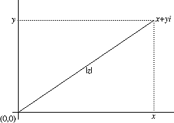
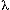

| The Mandelbrot Set exists in the abstract world of the complex number plane. This plane can be thought of as a two-dimensional grid that can be easily graphed on the Cartesian coordinate plane. Complex numbers have two parts, notated in the form x+yi with x being a real number component and yi being imaginary. The real number component can be placed on the real number line and so plotted on the horizontal x-axis of the a two-dimensional (2D) graph.
Imaginary numbers come from the equation
i^2=-1 or i = sqrt(-1)
When a real number is squared it always gives a positive result thus there is no real number whose square root is -1. So i does not exist on the real number line and is called imaginary. Imaginary numbers are usually denoted as the product of a real number and i in the form iy or yi. For example
sqrt(-4) = sqrt(4) * sqrt(-1) = 2i
The imaginary part of a complex number is plotted along the vertical y-axis of a 2D graph. The complex number x+yi can be then represented as the ordered pair (x,y) and plotted on a 2D graph representing the complex plane.
Given a complex number z such that
z= x+yi
the magnitude of z, written |z|, is defined as
|z| = sqrt(x^2+y^2)
This is an application of the Pythagorean theorem and describes the length of the line plotted from the origin of the graph (0,0) to (x,y). See Figure 1.

Figure 1: A plot of the complex number z represented as x+yi (x,y) on the complex plane. The magnitude of z (|z|=sqrt(x^2+y^2) is also shown.
The Mandelbrot set is defined by the simple recursive formula
z[n+1] = z[n]^2 + 
Where z is set initially to zero (0+0i) and is a complex number (in the form x+iy as the ordered pair (x,y) defining the point on the complex plane that is under investigation. The variable n is the counter in a recursive loop that determines the number of times this formula is repeated, starting with n=0 and ending at a maximum count value we will specify.
Using this function we find that there are points on the plane that exert a gravitational pull of sorts on the points around them. By using the above formula we can continually test to see if the point under investigation ever "escapes" from all of the points of attraction, and if so the counter value n tells us when. By testing for the magnitude of z (|z|) in each pass through the loop we determine that a point escapes when the magnitude reaches two or greater. (As this is a self-squaring process once a number reaches two it will run out quickly to infinity.) We choose a maximum count for n and assume that if the point under investigation has not reached two and escaped after n iterations then it probably never will.
The basic algorithm, with equal to the point under investigation is
let n = zero (the iteration count begins at 0)
let z = 0
let MAX = max iteration count (how long do we loop?)
begin loop
z[n+1] = z[n]^2 +
n=n+1
continue until n>MAX or |z|>=2
return n
If n becomes greater than the maximum iteration count specified then the point under consideration did not escape. If the loop is exited before the maximum iteration count then n represents the time in the process when the point escaped. It is these values of n for points on the complex plane, when mapped into color, that create the images of the Mandelbrot set with which we are familiar. These n values can also used to create music by mapping the numbers into musical dimensions.
To choose a window on the complex plane to investigate we define the parameters of the window as its midpoint (xMid, yMid) and the window size (WindowSize). The pseudo code for the program that generated the image in Figure 2 is seen below.
define xMid = .3515
define yMid = .4204
define WindowSize = .001
define MaxIteration = 255
define xResolution = 320
define yResolution = 320
xStart = xMid-.5*WindowSize
yStart = yMid-.5*WindowSize
xIncrement = WindowSize/xResolution
yIncrement = WindowSize/yResolution
for (yCounter=0; yCounter < yResolution; ++yCounter){
LamdaImag = yStart + yIncrement*yCount
for (xCounter=0; xCounter< xResolution; ++xCounter){
LamdaReal=xStart + xIncrement*xCounter
x = 0.0
y = 0.0
for (n=0; n < MaxInteration; ++n){
/**
(x +iy)^2 is calcated and the real
and imaginary parts separated
**/
xNew = x^2 - y^2 + LamdaReal
yNew = 2*x*y + LamdaImag
x=xNew
y=yNex
/**
testing for 4 instead of 2 here saves a
square root calculation
**/
if ((x^2+y^2)>= 4) break;
}
plot(n)
}
}
It is beyond the scope of this article to give more than a cursory discussion of the Mandelbrot Set. For a more detailed discussion of fractals and the Mandelbrot Set see [4] [5] [6]. |